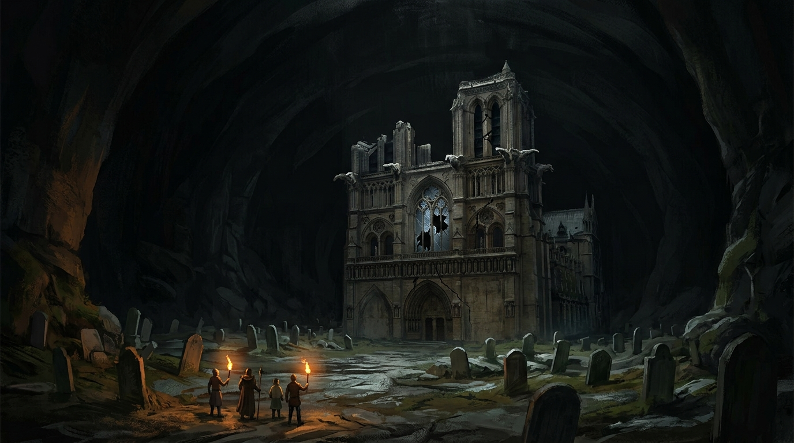

O Mundo Lá Fora · I · O Túmulo Negro
Documento do mundo
Documento · folhas escritas sob o mausoléu, do primeiro ao quinto dia, com um acréscimo posterior
Escrevo isto porque meu mestre escrevia, e porque foi de um caderno dele que veio tudo o que estou fazendo aqui.
Ele me deixou um Tomo dos Anciões. Não é livro de estudo: é livro de caminho. Quem o carrega vai parar perto de artefatos, e não escolhe qual. Eu não pedi este lugar. Este lugar é onde o tomo me pôs.
Desci por uma boca de passagem escorada com madeira de mina, cavada baixo, na altura de quem tem menos altura que eu. Passei a maior parte do primeiro trecho dobrada, o que é a pior coisa que pode acontecer a alguém que luta em pé.
Achei a necrópole, e depois dela um mausoléu, e no meio do mausoléu a câmara que eu tinha vindo procurar.
Anoto o que vi e nada além: um túmulo de mármore negro, do dobro do tamanho dos outros, cercado de velas negras acesas. A tampa fechada. As esculturas em volta contando a vida de um homem, e continuando depois que ele morre.
Confirmado, portanto, o essencial. Ele está aqui.
Não abri o túmulo.
Escrevo em letra grande porque quero que a decisão fique registrada como decisão, e não como falta de coragem. Eu vim confirmar que ele estava aqui, e a tampa fechada confirma tanto quanto a tampa aberta. Um corpo dentro de uma pedra não muda de lugar. O que muda quando se abre a pedra é tudo o mais.
Meu mestre dizia que pesquisa é a arte de descobrir sem perturbar. Eu não sou boa nisso. Eu sou boa em quebrar coisas. É por isso que preciso escrever a regra antes de estar com a mão na tampa.
Hoje anoto a coisa que mais me incomoda deste lugar, que não é o morto.
Tem mais alguém aqui embaixo.
Nunca o vi. Sei que existe pelo mesmo motivo pelo qual se sabe que há alguém atrás de você numa rua vazia: porque se sente. Sempre que estou trabalhando perto da câmara, sinto de que lado ele está. Se eu mudo de corredor, a sensação muda de lugar junto comigo, e fica sempre um pouco atrás.
Ele mora depois do labirinto. Isso eu deduzi pela direção, não por tê-lo visto.
E ele mexe nas minhas coisas, do jeito mais educado possível. Quando fujo dos mortos que saem das tumbas, deixo tochas apagadas para trás, porque apagar é mais rápido do que carregar. Elas amanhecem acesas.
Anoto a conclusão para não me esquecer dela: quem se esconde de mim está com medo de mim. Cinco dias e ele não apareceu uma vez. Eu tenho um metro e oitenta e duas espadas, e ele decidiu que não vale a pena. É um covarde, e um covarde é um problema pequeno.
Tentei localizar passagem secreta na câmara e não achei. Tentei achar escrita, e não desenho, em qualquer lugar do mausoléu, e não achei. Refiz o corredor três vezes procurando o que meu mestre chamava de costura, o ponto em que uma construção velha foi remendada por outra mais nova. Nada.
Entrei no labirinto duas vezes. Não fui até o fim das duas. Não é medo, é aritmética: eu carrego comida para poucos dias e não conheço a saída.
Achei este vão atrás da pedra e passei a dormir aqui. Cama nas pedras, mesa, velas. Fecho a passagem quando entro.
Hoje o lugar deixou de ser meu.
Estava escrevendo quando escutei combate lá embaixo. Eles entraram sem barulho, horas antes, e eu não percebi coisa nenhuma até a briga começar, o que registro aqui como falha minha e não como mérito deles.
Vi quatro passando pelo corredor carregando um. O que carregavam estava com três cortes no corpo e não abria o olho. Reconheci a cena antes de reconhecer as pessoas.
Estendi a mão pela pedra e puxei o primeiro que passou pela escada. Não foi caridade. Foi que eu ainda preciso de gente viva aqui embaixo.
Sentaram, e a sala ficou pequena. Um deles estava desidratado e com a musculatura em caroços, do jeito de quem foi tocado pelas sombras e sobreviveu por pouco. Outro estava inteiro por fora e não estava inteiro.
Eu perguntei se não estavam sentindo falta de ninguém. É pergunta de quem já sabe.
O que morreu se chamava Silva. Não sobrou corpo para carregar, e por isso vieram carregando o outro. O relato deles é que o cavaleiro passou a espada para a mão esquerda, acendeu fogo na direita e arremessou aos pés dele, e que depois do fogo veio uma coisa negra que terminou o serviço. Nenhum deles chegou a ver de perto. Todos viram de longe, o que é diferente, e vou anotar as duas versões se algum dia elas divergirem.
Eu nunca o vi vivo. Escrevo o nome dele aqui porque, tirando os companheiros, este caderno é o único lugar do mundo em que ele ainda está escrito.
Vou ser justa, porque justiça em caderno de pesquisa custa pouco e vale muito depois.
Eles abriram o túmulo. Eu não teria aberto, e disse isso a eles com mais orgulho do que era necessário. Mas eu também não teria a confirmação que tenho agora, e a confirmação é minha, e veio de graça, e veio deles.
Havia sido pior que abrir. Um deles chamou luz sagrada duas vezes sobre a pedra. A primeira só fez a pedra tremer. A segunda caiu direto no corpo, e os olhos do morto ficaram azuis.
Escutei os quatro discutindo isso a noite inteira, e a discussão não é sobre o que fizeram. É sobre quem avisou. Eu conheço essa discussão. Ela é o que sobra quando não há mais nada para fazer.
Ele se chama Erebus.
Foi um cavaleiro cruel e sanguinário. Tomou conta de um reino e manteve aquele poder por muitos e muitos anos, o bastante para que o registro fale em eras e não em reinados.
Uma ordem de clérigos amaldiçoou a existência dele, e com isso os deuses conseguiram terminá-lo.
E então o Deus da Morte o trouxe de volta, para que ele se vingasse da ordem que o tinha amaldiçoado. A ordem foi exterminada. O tomo o chama de ceifador de almas, e o tomo não é um livro dado a adjetivo.
Faltam folhas.
Descobri isto no primeiro dia e passei os quatro seguintes fingindo que era desgaste. Não é. Há espaço de sobra na costura, e as folhas que faltam são exatamente as que vinham depois do que acabei de copiar acima. A história dele para no ponto em que fica interessante.
Meu mestre não me deixaria um livro furado por descuido.
Ou ele arrancou, ou alguém arrancou antes dele, ou este tomo não foi feito para ser lido inteiro por uma pessoa só. Nenhuma das três me agrada.
Fomos para o labirinto porque era o único caminho que o morto não tinha tomado.
Num armário de pedra guardado por lâmina e agulha havia três livros. Dois em língua comum, com história geral sobre a Tormenta. O terceiro em élfico.
O terceiro fala de uma igreja escondida nas pedras, de um bruxo que habita essa igreja, deste labirinto em que estávamos parados na hora de ler, e de Erebus, com o nome dele escrito por extenso.
É o meu trecho. É o que foi arrancado do meu tomo, inteiro, num livro que não é meu, guardado atrás de agulhas, a alguns corredores de onde eu dormi cinco noites.
Alguém arrancou as páginas do meu livro e as guardou aqui embaixo, ou escreveu as duas coisas, ou colecionou as duas. Escrevo as três possibilidades porque ainda não sei escolher, e porque agora tenho uma pergunta melhor do que a que me trouxe.
Ela não é mais como o cavaleiro veio parar aqui.
É quem foi que o trancou, e por que essa pessoa continua trocando as velas.
Mônica
guerreira, quinto dia sob o mausoléu, à espera de uma confirmação